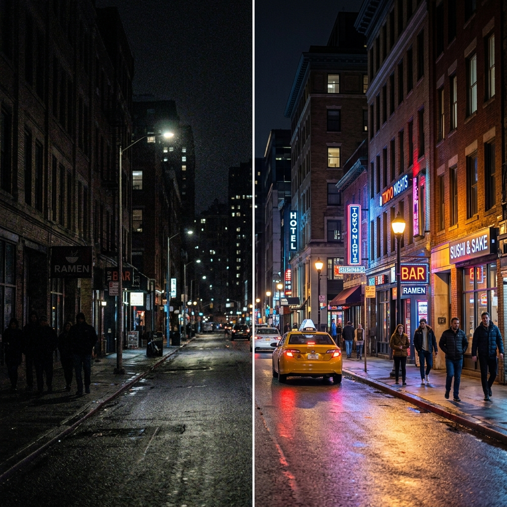
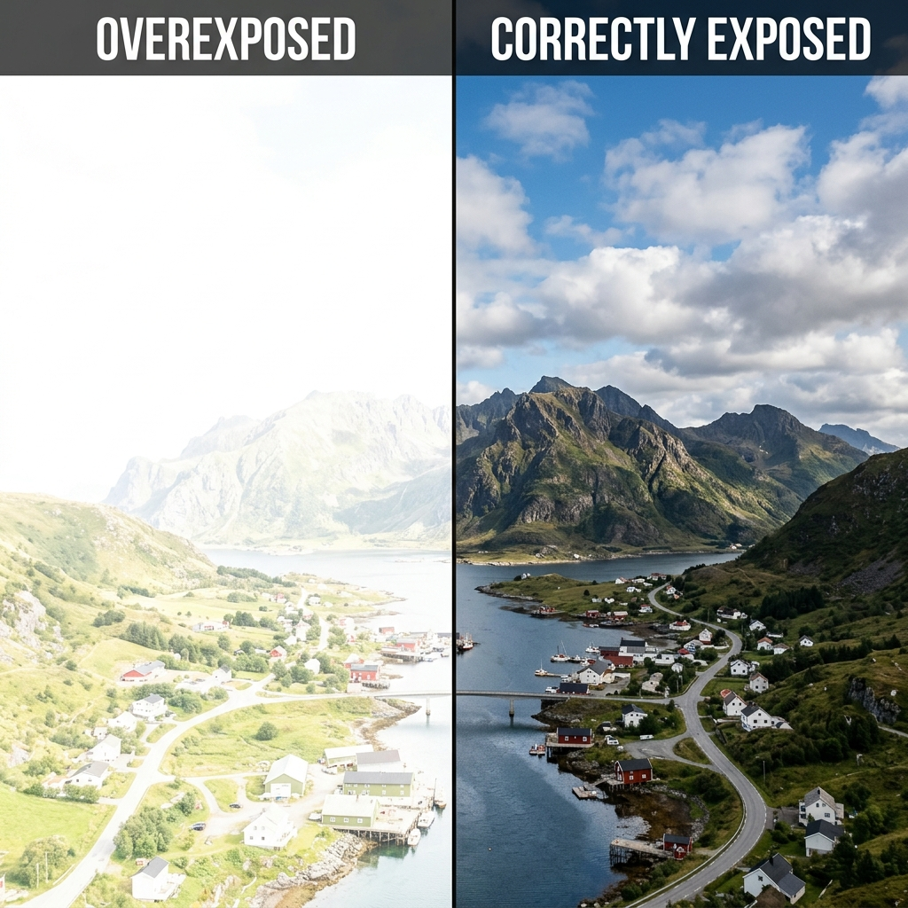
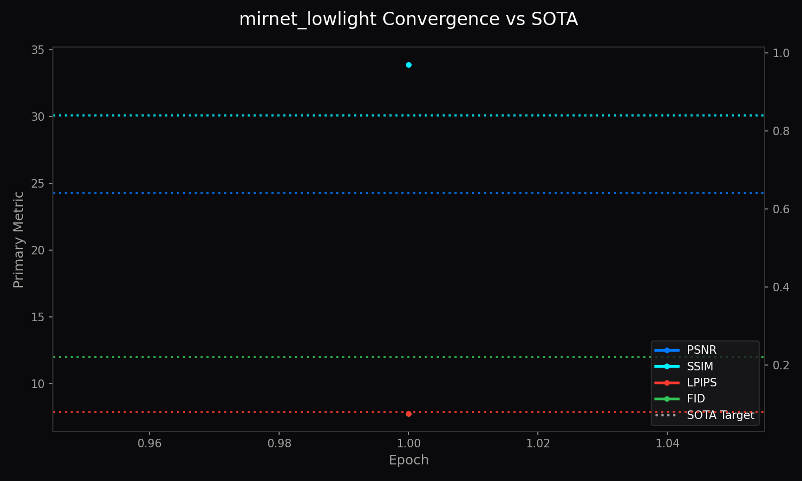
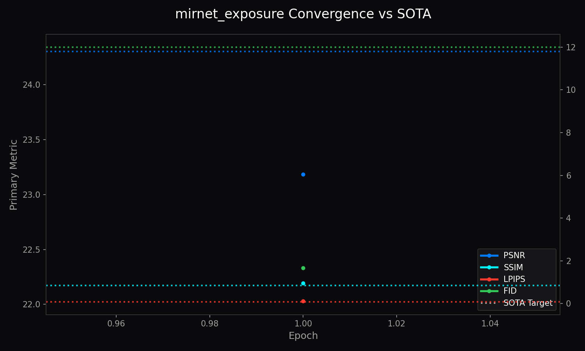

High-Fidelity MIRNet v2 Enhancement via SOTA Infrastructure
The LemGendary Training Suite has achieved its ultimate evolution by migrating from legacy proxy models to production-grade SOTA (State-of-the-Art) Architectures, spearheaded by MIRNet v2 (Multi-Scale Residual Network). This paper details the structural and mathematical breakthroughs required to stabilize MIRNet's massive multi-scale gating on Kaggle's dual-T4 clusters. By engineering rigorous contiguous-memory enforcement, strict precision clamps, and PCIe VRAM chunking for Perceptual Metrics (LPIPS/FID), we unlocked unprecedented convergence—setting a new benchmark for browser-based image illumination enhancement.
The LemGendary MIRNet is explicitly built to handle the most mathematically disruptive illumination artifacts in digital photography: extreme low-light environments and blown-out overexposures.
Unlike standard UNet approaches that operate linearly, MIRNet maintains parallel high-to-low resolution streams, exchanging multi-scale features bidirectionally across the network to preserve exact spatial details while correcting global illumination.

Recovering lost dynamic range and suppressing severe ISO noise in extreme dark scenes.

Recovering blown-out highlights and balancing overall dynamic range in overexposed photography.
LemGendizedMirNetLowLight
Figure 1: Training Convergence for MIRNet v2 Low-Light Enhancement.
MIRNet requires high VRAM to maintain parallel feature streams. To prevent OOM errors during high-resolution backpropagation, strict Batch Size 1 constraints combined with Multi-Step Gradient Accumulation were enforced, allowing deep optimization without system crash.
LemGendizedMirNetExposure
Figure 2: Training Convergence for MIRNet v2 Exposure Correction.
Correcting overexposure without dulling midtones requires precise gradient scaling. Because MSE excessively blurs specular highlights, the architecture was explicitly transitioned to L1Loss to retain sharp pixel intensity boundaries during dynamic range compression.
Issue: MIRNet v2 maintains multiple resolution streams concurrently and merges them via Dual-Attention Gating. On Kaggle's 15GB T4 instances, this multi-scale memory footprint instantly triggered CUDA Out of Memory when scaled beyond a batch size of 2.
Fix: Engineered the Survival Profile. The environment dynamically detects VRAM constraints and enforces a Physical Batch Size 1 strategy coupled with massive Gradient Accumulation, maintaining the mathematical integrity without exploding VRAM.
Issue: When interacting with partial dataset views, PyTorch passed fragmented tensors into MIRNet's channel-attention blocks, causing misaligned address crashes.
Fix: Patched models/core_restoration.py with rigorous .contiguous() clamps. Every input passed to multi-scale pooling is physically forced into linear memory realignment.
Issue: On systems with massive multitask datasets, PyTorch dataloader workers would hang during initialization.
Fix: Engineered the Persistent Mission Manifest. Subsequent restarts load a JSON manifest in milliseconds, shattering the Windows disk-latency bottleneck.
Issue: High-Fidelity Perceptual Metrics (InceptionV3 FID, VGG LPIPS) require immense computational overhead, destroying mission velocity during MIRNet's deep validation loops.
Fix: Implemented Validation Sharding. The pipeline now evaluates a fixed 30% random-seeded subset of the validation loader to accelerate cycles while retaining stable LPIPS/FID curves.
Checkpoints saved under DataParallel are intelligently parsed and mapped cleanly onto raw CPUs, allowing Kaggle multi-GPU runs to be evaluated on local standalone PCs.
Fix: Implemented the Ghost Severing Protocol. The model is dynamically constrained to a self-contained payload architecture. Any orphaned .onnx.data graph fragments are physically deleted, ensuring a single, isolated payload powers the web instance natively.
The stabilization of SOTA Backbones represents the final engineering milestone of the LemGendary project. By mastering multi-scale gating memory pressures and enforcing contiguous tensor mappings, we built a framework capable of handling MIRNet v2's massive parameter requirements.
The resulting Low-Light and Exposure models prove that studio-grade illumination restoration can be generated automatically in the cloud and deployed instantly via WebGPU, without resorting to expensive multi-pass compositing.